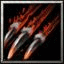

父親是戰國大名淺井長政，母親是織田信長之妹織田 市，她出生於近將國小谷城，父親長政與舅父信長互相爭戰多年。 敏捷型近戰英雄
法術 ：Ｃ 輔助 ：Ａ 最擅長一對一人 力量：22+2.10 敏捷：29+2.75（主要） 智慧：28+2.00  Ｄ[主動] 一刀．瞬 父親淺井長政所傳授的刀法，但是茶茶尚未完全領悟。 有50%機率能夠瞬移到距離1100目標身旁，進行快速的一次斬擊造成250傷害(因尚未精通，施展後要等候0.6秒，否則將會失效)。 消耗法力100，等待時間 16秒 Ｗ[主動] 迴旋裂斬 跳躍起來旋轉手上的武器攻擊周圍200的敵人而造成[250/350/450/550]傷害。 消耗法力[80/100/120/140]，等待時間7秒  Ｅ[主動] 短刃投擲 對著敵方部隊投擲短刃，造成[100/200/300/400]點傷害並暈眩[0.5/1/1.5/2]秒。 消耗法力[100/120/140/160]，等待時間16秒
向目標眼睛放出強烈的光芒，導致指定目標攻擊時有[30/40/50/60]%的失誤，並有25%消去它最多[150/250/350/450]點法力。 消耗法力[50/60/70/80]，等待時間15秒 
Ｔ[主動] 放血之術使破敵的手法更加毒辣： 增加攻擊力[30/40/60]點。 能將目標放血，目標每2秒便受到[250/425/600]點物理傷害並暈眩1秒，持續12秒。 消耗法力[200/250]，等待時間[90/104]秒 |